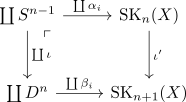
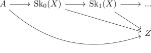
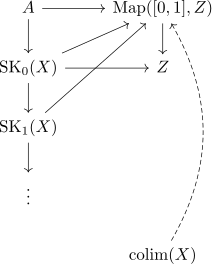

CW Pair as cofibration
Proposition
Let $(X,A)$ be a CW Pair. Then $\iota: A \rightarrow X$ is a cofibration
Proof
Since $\iota: S^{n-1} \rightarrow D^n$ is a cofibration (cf. sphere into disk as cofibration), by cofibrations under coproducts it follows, that
is also cofibration.
Since cofibrations are mirrored under pushouts it follows, that the attaching map
is also a cofibration

Let $Z$ be a topological space and $A \rightarrow Z$ a homotopy Then since each inclusion from $\mathrm{SK}_n(X) \rightarrow \mathrm{SK}_{n+1}(X)$ is a cofibration

we can inductively construct homotopies $A \rightarrow Z, \mathrm{SK}_0(X) \rightarrow Z, \mathrm{SK}_1(X) \rightarrow Z, ...$. Then we get a diagram, which commutes by construction and thus, by cofibration and currying lift, we get by universal property a map
